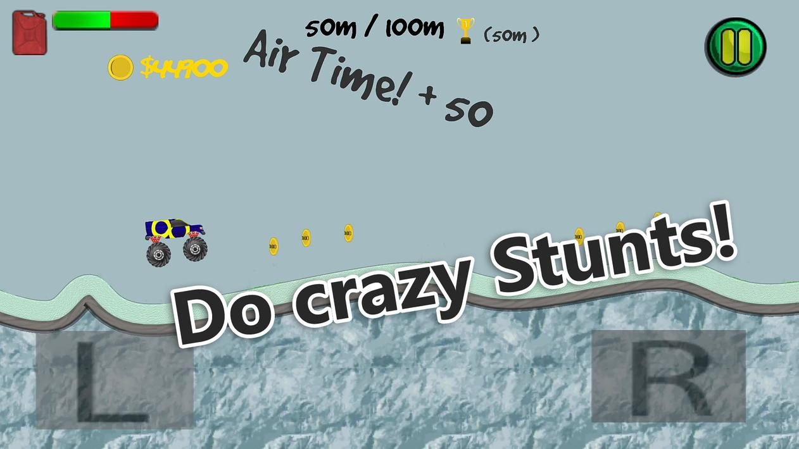

Before University, I started Hill Slope Racing as a tutorial to the Unity Engine in C#. Before long, I got very invested and completed the whole game.

Various algorithms were used for modeling sound, vehicle behaviour, score system
and pathing for the level. Each level offers a new experience such as low gravity, friction.
Players get a sense of progression by upgrading their vehicle and unlocking new levels.